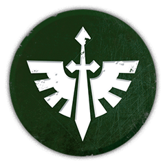

Merir Astelan
| Merir Astelan | |
|---|---|
| Chapter Master of the I Legion; one of the Fallen | |
 Astelan as Chapter Master of the Great Crusade, from a portrait in the Dark Angels' sealed archive | |
| Chapter Master, Dark Angels Legion | |
| Tenure | Great Crusade (dates unrecorded) – c. 014.M31 |
| Ruler of Tharsis | |
| Tenure | Late M41 (about seventy years; dates unrecorded) |
| Born | M30 (year unrecorded), the Sibran Steppes, Terra |
| Status | At large after 998.M41 |
| Allegiance | Luther and the Fallen; claims loyalty to the Emperor of Mankind |
| Legion |  I, the Dark Angels |
| Ship | Spear of Truth (Great Crusade flagship) |
| Known for | First name on the list of the Fallen; the interrogation on The Rock; the Tuchulcha plot |
Merir Astelan is a Terran-born Space Marine of the Dark Angels who commanded a Chapter of the I Legion in the Great Crusade and joined Luther's rebellion on Caliban at the end of the Horus Heresy. His name stands first on the secret list, kept by the Dark Angels' Master of Chaplains, of the hundred and thirty-six legionaries who first swore to Luther. Like the other Fallen he was cast through time and space when Caliban was destroyed, c. 014.M31. He reappeared in the 41st millennium, made himself ruler of the world of Tharsis, was captured and questioned on The Rock, and escaped. In 998.M41 he plotted with Typhus to bring the Fallen of the Heresy into the present, and was defeated in the Caliban system.[1][2]
Under interrogation Astelan gave an account of the Legion's early history that troubled his captors, and the Dark Angels keep it sealed.[2]
Early life
[edit]Astelan was born on the Sibran Steppes of Terra, among a people who had fought beside the Emperor in the Unification Wars (late M29 – c. 712.M30) and from whom many of the first volunteers for the Space Marine programme were taken. He was among the first legionaries of the I Legion, raised on Terra before the Legion was reunited with its primarch, Lion El'Jonson, on Caliban. He welcomed the Calibanite recruits who followed and rose to command a Chapter of the Legion aboard the flagship Spear of Truth.[1]
The Great Crusade
[edit]As Chapter Master Astelan led an expeditionary fleet of fewer than eighteen ships through little-known space. At the world of Byzanthis he was joined by the Calibanite Chapter Master Belath, sent by the Lion. Astelan held that a world won by persuasion would be a better subject than one won by war, and he sought to bring the Byzanthians to Compliance by parley. Belath favoured overwhelming force. Astelan's embassy to the world's Committee of Nations ended in fighting when one of its states attacked the fleet. Soon after, Astelan was posted back to Caliban, an assignment the officers there regarded as exile.[1]
Caliban and the Fall
[edit]On Caliban Astelan joined the training cadre of Luther, the Lion's foster-brother and Master of Caliban, who had himself been sent home years before. Luther gave him a training Chapter and his full trust, and Astelan became one of his most loyal followers. By his own account, when the Lion's fleet returned to Caliban at the end of the Heresy, it was Astelan who gave the order to open fire on it. The battle that followed destroyed Caliban c. 014.M31. A Warp storm swept the Fallen away; one fragment of the world survived and became The Rock.[2][a]

The 41st millennium
[edit]Tharsis
[edit]Astelan woke in the 41st millennium and was shocked at what the Imperium had become. He wanted to "light a signal fire" for the ideals of the Great Crusade. After a time with the Rogue Trader Trialartes and two other Fallen, Methelas and Anovel, whose interest was revenge rather than the Imperium, he left them on the small world of Tharsis, then in civil war. He took command of its Imperial forces and won the war in eight years. When the Imperial Commander meant to restore the old noble houses, Astelan's troops killed him. Astelan refused the Ecclesiarchy's demand that he acknowledge the Emperor as a god, removed every official who opposed him, and ruled Tharsis for some seventy years, building its armies for a new crusade.[2]
Interrogation
[edit]A lifepod that fled Tharsis carried word to a passing Dark Angels ship. The Interrogator-Chaplain Boreas came with a Deathwing squad, and when Astelan recognised who they were he ordered his troops to stand down. He was taken to the Tower of Angels on The Rock and questioned for fifteen days by Boreas and the Librarian Samiel. He did not repent. He told them that he had fired on the Lion's fleet and had stood with Luther, and he gave an account of the Legion's past, and of the Lion, that shook his interrogators.[2]
The Caliban system
[edit]At some time later in the 41st millennium Astelan escaped the Rock and rejoined Methelas and Anovel. In 998.M41 they allied with Typhus to unite the three parts of the Tuchulcha engine, an ancient device that could open a way through time to the end of the Heresy. Astelan meant to bring the Fallen of ten thousand years before into the present and, with Dark Angels gene-seed and the Death Guard, make a new Legion, the Death Angels, to remake the Imperium. The Fallen known as Cypher let himself be captured and warned the Dark Angels that one part of the engine lay inside the Rock. Supreme Grand Master Azrael defeated the plot in the Caliban system, after Cypher turned Anovel against his allies. Astelan's fate after the battle is not recorded.[2]
Timeline
[edit]| Date | Event |
|---|---|
| M30 | Born on Terra; joins the I Legion |
| Great Crusade | Chapter Master; the Compliance of Byzanthis; posted to Caliban |
| c. 014.M31 | Joins Luther; fires on the Lion's fleet; the fall of Caliban (estimated) |
| Late M41 | Rules Tharsis; captured by Boreas; interrogated on The Rock |
| 998.M41 | Tuchulcha plot with Typhus; defeated in the Caliban system |
See also
[edit]Notes
[edit]- ^ The date of Caliban's fall is estimated. Imperial records place it at the close of the Horus Heresy, after the Lion's return from the Imperium Secundus campaign; Dark Angels records give no year.